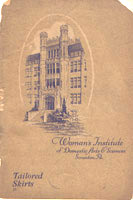
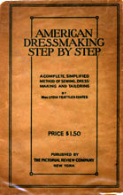

1910-1919
1916
Tailored Skirts, Woman's Institute of Domestic Arts & Sciences, by Mary Brooks Picken
This book gives detailed instructions for making tailored skirts (including circular and gored) as well as the all-important inside stay belt, plackets, and several types of hem treatments. (40 pages)
1917
American Dressmaking Step by Step, A complete, simplified method of sewing, dressmaking and tailoring, by Mme. Lydia Trattles Coates
Fifteen chapters, 321 lessons (some as short as one sentence!). Mix of line drawings and photographs. (250 pages)
Go to Table of Contents (short) - Lists chapter titles
Go to Table of Contents (long) - Complete list of lesson titles
Check the candidates' page to see what else will eventually be available.